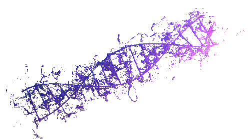

ISSO NÃO É UM CURSO!!!
Seja bem-vindo!
O site foi desenvolvido para anotações pessoais das aulas da disciplina de “Análise e Visualização de Dados em Fitpatologia”. Quando o criei, não tive a intenção de compartilha-lo. Porém, acredito que consigo passar um pouco do que aprendi com as aula de linguagem em R, ministradas pelo Professor Emerson M. Del Ponte.
Sou aluno de mestrado na Universidade Federal de Viçosa. Trabalho sob a orientação do Professor Eduardo S G Mizubuti.
Educação
Engenheiro Agrônomo pela Universidade Federal do Cariri (UFCA) | Mestrando em Fitopatologia na Universidade Federal de Viçosa (UFV).
Experiência
Lotado no Laboratório de Biologia de Populações de Fitopatogenos (BioPop): Estuda os aspectos genético-evolutivos de populações de fitopatógenos e a epidemiologia molecular visando às suas aplicações no manejo de doenças. O patossistema de interesse envolve videria e Plasmopara viticola. Desenvolveu projeto como Bolsista no Programa Institucional de Bolsas de Iniciação Científica (PIBIC), na área de Epidemiologia, desenvolvendo o plano de trabalho “Murcha-de-fusarium do feijão-caupi no Cariri cearense: levantamento da intensidade da doença, patógenos causadores e agressividade” (2021-2022) e anteriormente desenvolveu o plano de trabalho “Epidemiologia comparativa dos grupos de anastomose de Rhizoctonia causadores de rizoctoniose em feijão-caupi no Cariri cearense” (2020-2021). Foi Bolsista PIBIC no Laboratório de Química Geral, na área de Biotecnologia, onde desenvolveu atividades sobre “Reações de biotransformações de compostos carbonilados com Arachis hypogaea e Sesamum indicum”. Foi Bolsista PIBIC no Laboratório de Química Geral em Conjunto com o Laboratório de Tecnologia de Produtos, desenvolvendo atividades nas áreas de “Etnofarmacologia e Bioprospecção de óleos essenciais da Flora caririense”.